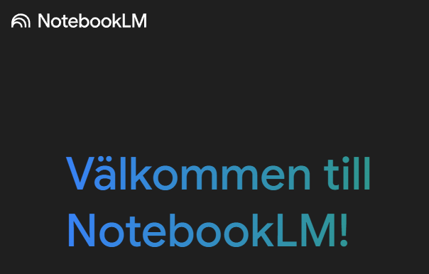
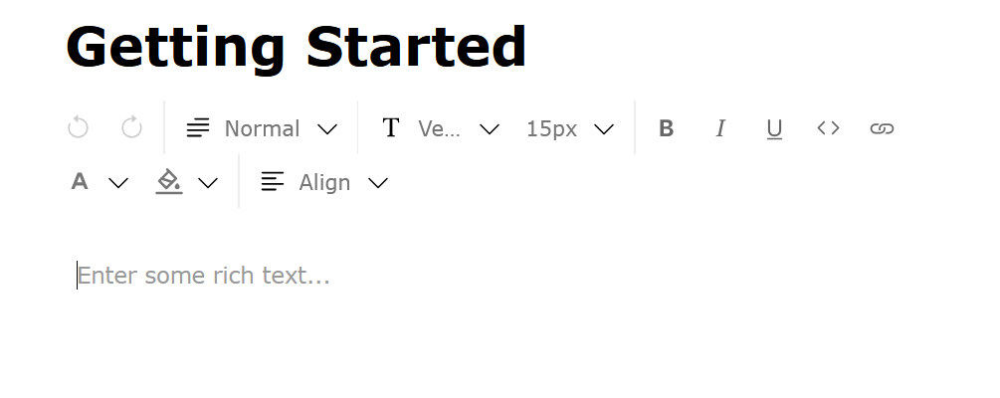

ChatGPT
ChatGPT är den vanligaste och mest välkända
tjänsten som finns ute. ChatGPT är en textbaserad AI-bot som kan besvara i stort sett alla förfrågningar
som anges. Efter att du har skrivit in din förfrågan kommer sedan ChatGPT söka efter information på nätet
som behövs för att besvara din fråga eller för att skriva din anpassade text. ChatGPT är även ett klockrent val
när det kommer till att skriva kod i olika språk eller att hjälpa till med att felsöka eller förbättra din egen kod. Numera
kan du även bifoga filer och prata direkt med ChatGPT med dess röstfunktion.
ChatGPT är generellt sett inte särskilt bra på att hänvisa till källor eller att värdera källor. Trots detta är ChatGPT ett väldigt
bra verktyg och är väldigt bra på att anpassa din text utifrån situationen. Tänk på att texten kanske inte blir perfekt efter första försöket,
kom ihåg att ChatGPT alltid kommer ge dig EXAKT det du ber den om. Tänk på att ditt ordval spelar en avgörande roll
för vad ChatGPT svarar och att du behöver specifiera det du vill ha. Du kan självklart fortsätta skriva i samma konversation
för att spara dina chattar och för att förbättra din text genom att be ChatGPT göra ändringar. ChatGPT är gratis men du kommer behöva ett konto
för att använda det, via kontot kan du sedan komma åt gamla chattar.
Tips!
Eftersom ChatGPT är den mest förekommande tjänsten idag, kommer nu några goda tips på användningsområden för ChatGPT:
- Skapa en anpassad guide eller instruktion
- Be om inspiration
- Skapa och förbättra texter
DeepSeek
DeepSeek är en annan avancerad AI-plattform och språkmodell, som fungerar på ungefär samma sätt som ChatGPT.
Den kan bearbeta komplexa frågor, sammanfatta information och generera text i olika format. DeepSeek fungerar både som en traditionell sökmotor och en interaktiv assistent.
Även denna tjänst kan analysera stora datamängder för att ge kontextbaserade svar, vilket gör processen att söka information mer effektiv. Det finns många olika åsikter om DeepSeek,
vissa menar att DeepSeek ger bättre svar jämfört med andra liknande tjänster. Oavsett, är DeepSeek verkligen värt att testa.
NotebookLM

NotebookLM är ett kraftfullt verktyg som är utformat för att effektivisera dina studier, möjligtvis den bästa tjänsten, som
kan göra en förvånadsvärt stor skillnad. Genom att registrera ett gratis-konto på NotebookLM får du tillgång till ett flertal verktyg som kan sammanfatta och simplifiera studiematerial i olika former.
Du kan till exempel bifoga en YouTube-länk, en PDF-fil eller ett Word-dokument och därefter be tjänsten att sammanfatta innehållet, eller att besvara specifika frågor om
innehållet. På så sätt kommer det inte finnas med information från okända eller potentiellt opålitliga källor.
Genom att klicka på din källa kan du direkt få en sammanfattning och även få bearbetning av
videon i textformat. På så sätt kan du även läsa det som sades i videon.
Något som du kanske lade märke till är att du alltså kan få innehållet i videon förklarat
på svenska, trots att YouTube-klippet var på engelska. Detta är någonting som kan vara väldigt
användbart om du skulle ha svårigheter att förstå svåra förklaringar på engelska.
Sen kommer det allra bästa. Du kan till och med skapa en podcast baserat på innehållet i din källa!
Genom att skapa en konversation som endast tar ett par minuter att generera, kan du lyssna på en kusligt
människolik dialog där rösterna diskuterar det ämne som källan handlar om. De kan ställa frågor till varandra
och förklara saker på ett helt annat sätt, vilket kanske är precis det du behöver för att förstå. En av de bästa sakerna med
denna funktion är att dialogerna inte är felfria. Det förekommer utfyllnadsord och det förekommer att värdarna säger fel och
ändrar sig mitt i meningen vilket gör diskussionen mycket mer mänsklig.
Till sist finns det ytterligare några studieverktyg. Du kan till exempel skapa en "Studieguide" där du får några frågeställningar
kopplat till innehållet att jobba med. Du kan delvis få lätta Quiz-frågor (med svar) att arbeta med men du kan även få lite mer omfattande fördjupningsfrågor eller "Essayfrågor".
Du får dessutom en ordlista med eventuellt några nya ord och dess mening.
Solvely.ai
Solvely.ai är en intelligent studieassistent där du som student kan använda den för att få hjälp med olika arbetsuppgifter, genom
AI-genererade förklaringar. Plattformen stödjer olika ämnen som matematik, naturvetenskap och samhällskunskap. Du som användare kan ställa frågor och få steg-för-steg-lösningar som
underlättar förståelsen av komplexa koncept. En av de allra bästa och användbara funktionerna som vi kan rekommendera är funktionen "AI Quizzer".
Genom att välja alternativet "Question-based" kan du till exempel klistra in ett långt dokument med studiematerial, välja ämne och antal frågor och sedan klicka på "Generate".
Nu kommer sidan att skapa ett Quiz baserat på det innehåll som du har klistrat in. Du kan därefter start quizzet och börja lära dig innehållet. Detta är ett effektivt och interaktivt sätt att plugga, som du kan börja med
direkt, bara genom att skapa ett konto. Solvely-ai erbjuder ett antal gratis-funktioner som alla kan vara till väldigt stor nytta.
Intellecs.ai

Intellecs.ai är en annan textbaserad AI-tjänst. Denna hemsida är relativt lik ChatGPT,
eftersom även denna kan använda information från internet för att besvara dina förfrågningar. En avsevärd skillnad däremot är möjligheten att bifoga en PDF-fil. Fördelen med detta är att
svaret endast är baserat på den information som finns i din bifogade fil.
Även fast detta är begränsande, lämnar det utrymme åt dig att hitta dina egna källor eller studier på internet och att själv få avgöra
om källan i fråga är lämplig att använda. När du har ställt en fråga om innehållet, kommer hemsidan även hänvisa till den del som den hämtade informationen.
Den största nackdelen med denna tjänst är att den numera inte är gratis att använda.


Sist men inte minst kan du skriva texter med hjälp av hemsidan. Det du gör är att du börjar skriva din text eller uppsats som vanligt
och sedan markerar vissa meningar för att sedan göra ändringar. Du kan till exempel låta AI rätta till grammatiska fel, göra meningen längre eller mer formell. Annars kan du skriva in
en valfri förfrågan. Det mest användbara sättet att använda detta är att be den att omformulera en mening på ett önskat sätt. På så sätt kan du få en bättre
språkförståelse och även lära dig hur du formulerar dig på andra sätt, vilket sedan kommer att hjälpa dig att bli mer flexibel i ditt skrivande.
perplexity.ai
perplexity.ai är en hemsida som per automatik länkar till de källor som dess AI har använt i sitt svar.
Bortsett från detta fungerar hemsidan mer eller mindre på samma sätt som ChatGPT. En nackdel däremot är att källorna nödvändigtvis inte behöver vara relevanta för din text.
Därför är det viktigt att kolla upp källorna och värdera deras trovärdighet. Genom att använda detta verktyg har du lättare att hitta källor som kan vara användbara i ditt specifika fall.
Att tänka på!
Nu har du läst om ett antal användbara textbaserade AI-tjänster och lärt dig om deras användningsområden.
Som tidigare nämnt är det viktigt att veta vad du vill ha för typ av text eller svar för att få ut bästa möjliga resultat. Detta gäller
för alla textbaserade verktyg som använder AI.
Därför kommer nu några exempel på saker att tänka på när du använder AI för att den ska förstå vad du vill ha:
- Ange typ av text (ifall det är en text)
- Berätta i detalj vad som ska vara med
- Beskriv strukturen av ditt önskade svar
- Använd nyckelord